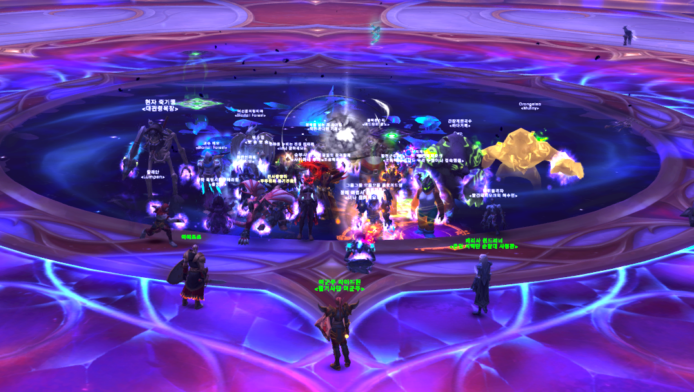

About the Guild
공격대 소개
Team SAD가 걸어온 길과 우리가 레이드하는 방식.

"서로 도와가면서 해요"
The Name
이름의 유래 — Seeca's Abandoned Dogs
우리 공격대의 이름은 아주 작은 농담에서 시작됐습니다. 공격대를 창설한 초대 공대장 Seeca, 그가 떠난 자리에 남겨진 사람들. '버림받은 강아지들(Abandoned Dogs)'이라는 자조 섞인 한마디가, 누구도 예상 못 한 사이 우리의 정체성이 되어버렸습니다.
그런데 곱씹을수록 묘하게 들어맞았습니다. Seeca에게 유기(遺棄)되었을지언정, 우리는 서로를 톱니처럼 맞물려 유기(有機)적으로 돌아가는 공격대가 되었으니까요. 버림받은 강아지들은 흩어지는 대신 더 단단한 무리가 되었습니다. 꿈보다 해몽이라 해도 좋습니다 — 우리는 그 해몽을 진심으로 믿기로 했으니까요.
좋은 일로 떠나는 동료는 축복하며 보냅니다. 더 높은 곳으로, 혹은 결혼과 출산 같은 현생의 행복으로. 그렇게 기분 좋게 서로를 '유기'하고 또 '유기'당하면서도, 남은 자리는 언제나 따뜻하게 다시 채워집니다. 떠남이 슬픔이 아니라 결속이 되는 곳, 그것이 우리입니다.
그래서 SAD는 'Seeca's Abandoned Dogs'이자, 동시에 우리가 일하는 방식 그 자체입니다. S(서로) A(아낌없이) D(도와가며). 슬픈 이름 속에 가장 따뜻한 다짐을 숨겨둔 셈입니다.
베테랑과 젊은 피의 융화
명예의 전당과 최상위권을 경험한 베테랑, 그리고 뛰어난 피지컬의 20대 젊은 피가 모인 정예 공격대입니다. 실력은 날카롭되 분위기는 한없이 유합니다.
연장보다 조퇴를 사랑하는 효율
주 1~2일의 한정된 시간에 최고 효율을 뽑습니다. 연장은커녕 쿨하게 조퇴하는 탓에 통계 사이트엔 5~7시간 공격대로 기록되는 유쾌한 일상을 즐깁니다.
현생 우선, 기분 좋은 '유기'
더 높은 목표로 상위 공격대에 가는 공대원을 진심으로 응원하며 흔쾌히 보냅니다. 결혼·출산 등 현생의 중대사도 슬퍼하지 않습니다. 무엇보다 현생이 우선이니까요.
전생에 죄를 지으면 공격대장을 하고 취업이 늦어진다는 말이 있다.
나는 그 말을 참 좋아한다.
[ 현 공대장의 한마디 넣을 자리 ]
사인 넣을 자리